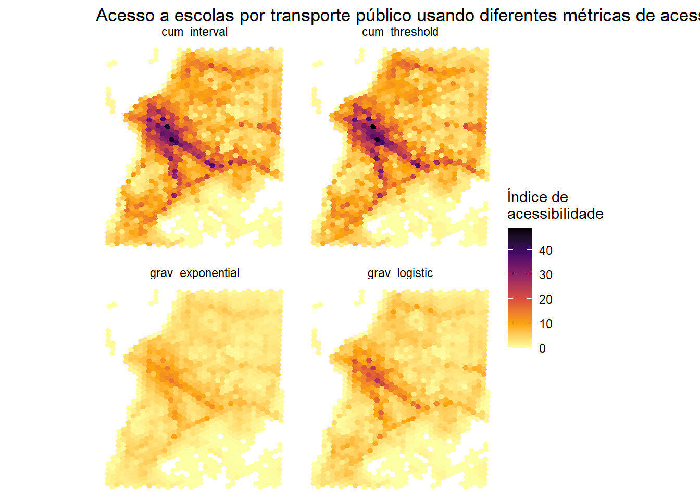

# allocating memory to java
options(java.parameters = "-Xmx6G")
library(r5r)
library(accessibility)
library(h3jsr)
library(dplyr)
library(mapview)
library(ggplot2)In the the previous section, we learned a ‘quick approach’ to calculate accessibility directly from within {r5r}. A shortcoming of this approach is that it is limited to only a few predefined accessibility metrics available in {r5r}. Oftentimes, we want to analyze other types of accessibility metrics and/or to have more control of the different steps of the analysis.
In this section, we’ll learn how to calculate travel time matrices and to use them to compute different types of accessibility metrics. This is a more ‘flexible’ approach that combines the capabilities of the {r5r} and the {accessibility} packages. We’ll use again the sample data for the city of Porto Alegre, Brazil, that comes with the {r5r} package.
|
|
|
This flexible approach to calculate accessibility only involves 3 steps:
- Building a routable transport network
- Computing a travel time matrix
- Calculating accessibility
Now let’s start loading the packages we need:
5.1 Building a routable transport network
First, we build the multimodal transport network by passing the path of our data directory to the r5r::setup_r5() function.
# path to data directory
data_path <- system.file("extdata/poa", package = "r5r")
# build network
r5r_core <- r5r::setup_r5(data_path,
verbose = FALSE)5.2 Computing a travel time matrix
The second step is to calculate a travel time matrix with door-to-door travel time estimates from all origins to all destinations. To do this, we use the r5r::travel_time_matrix() function.
As basic inputs, this function receives the routable network created above, origin and destination points as data.frames with columns id, lon and lat, the transportation mode and the departure time.
# read points data
points <- read.csv(file.path(data_path, "poa_hexgrid.csv"))
# routing inputs
mode <- c("walk", "transit")
max_trip_duration <- 30
departure_datetime <- as.POSIXct("13-05-2019 14:00:00",
format = "%d-%m-%Y %H:%M:%S")
# calculate travel time matrix
ttm <- r5r::travel_time_matrix(
r5r_core = r5r_core,
origins = points,
destinations = points,
mode = mode,
departure_datetime = departure_datetime,
max_trip_duration = max_trip_duration,
progress = TRUE
)- 1
- In minutes
Tip
Note that the r5r::travel_time_matrix() includes several additional parameters that allow you to specify some trip characteristics, such as maximum walking time, a departure time window, the maximum number of public transport legs allowed, etc. For more info, check the documentation of the function by calling ?r5r::travel_time_matrix in your R Console or check the documentation on {r5r} website.
The output is a data.frame, which looks like this. It is a matrix in long format with the columns from_id, to_id and a third column indicating the travel time (in minutes) for each origin-destination pair.
head(ttm) from_id to_id travel_time_p50
<char> <char> <int>
1: 89a901291abffff 89a901291abffff 1
2: 89a901291abffff 89a90129157ffff 25
3: 89a901291abffff 89a9012956bffff 29
4: 89a901291abffff 89a90128257ffff 29
5: 89a901291abffff 89a90129ed3ffff 29
6: 89a901291abffff 89a9012913bffff 19
Processing speed
The travel_time_matrix() function uses an extension of the RAPTOR routing algorithm (Conway, Byrd, and van der Linden 2017), making R5 extremely fast. Depending on the number of origin-destination pairs, {r5r} can calculate travel time matrices between 6 and 200 times faster than other multimodal routing engines (Higgins et al. 2022).
5.3 Calculating accessibility

Having computed a travel time matrix, we can combine it with land use data to calculate accessibility. For this, we will use the {accessibility} package, which provides some fast and convenient functions to calculate several accessibility measures.
The package currently includes more than 7 different types of accessibility measures (see details in the package documentation website).
cost_to_closest(): Minimum travel cost to closest N number of opportunitiescumulative_cutoff(): Cumulative access based on a travel cost cutoffcumulative_interval(): Cumulative access based on a travel time intervalgravity(): Gravity-based accessibility measuresfloating_catchment_area(): Floating catchment area accessibilityspatial_availability(): Spatial availabilitybalancing_cost(): Balancing cost accessibility measure
As basic inputs, all functions of the package require a pre-calculated cost matrix (in our case, a travel time matrix) and some land use data with the number of opportunities (e.g. schools, jobs) in each cell of the study area. Both inputs must be organized in a data.frame format. We have just seen above the structure of the travel matrix. The land use data.frame must be organized like this:
# land use data
head(points)- 1
-
The land use data must contain an
idcolumn, referring to the ids listed in the travel matrix, and the number of opportunities in each location.
id lon lat population schools jobs healthcare
1 89a901291abffff -51.15825 -30.05385 0 0 1214 0
2 89a9012a3cfffff -51.21187 -30.10058 159 0 0 0
3 89a901295b7ffff -51.16521 -30.07544 1008 0 3 1
4 89a901284a3ffff -51.20535 -30.09005 92 0 0 0
5 89a9012809bffff -51.19575 -30.07839 577 0 9 0
6 89a901285cfffff -51.21108 -30.08124 1170 0 427 0Now let’s calculate a few accessibility indicators.
5.3.1 Cumulative accessibility measure
5.3.1.1 Threshold-based cumulative accessibility
To calculate a traditional cumulative accessibility measure, we can use the accessibility::cumulative_cutoff() function. Along with the travel matrix and land use data sets, we only need to pass the name of the column with the travel time values, the name of the column with the count of opportunities, and a travel time cutoff.
Here, we calculate the number of schools accessible in 20 minutes.
# threshold-based cumulative accessibility
access_cum_t <- accessibility::cumulative_cutoff(
travel_matrix = ttm,
land_use_data = points,
travel_cost = 'travel_time_p50',
opportunity = 'schools',
cutoff = 20
)
head(access_cum_t) id schools
<char> <int>
1: 89a9012124fffff 1
2: 89a9012126bffff 3
3: 89a9012127bffff 3
4: 89a90128003ffff 8
5: 89a90128007ffff 6
6: 89a9012800bffff 95.3.1.2 Interval-based cumulative accessibility
Previous studies have shown that the ad-hoc choice of a single travel time threshold can substantially influence the results of traditional cumulative accessibility measures, introducing bias into transport project evaluations and equity analyses (Pereira 2019). To overcome this issue, we have proposed a time interval cumulative accessibility measure (Tomasiello et al. 2023). This new metric estimates the average (or the median) number of opportunities that can be reached considering multiple minute-by-minute cutoffs within a given travel time interval.
The main advantage of this metric is that it mitigates the impacts of arbitrary choices of trip duration on accessibility analysis while preserving the computation and communicability advantages of threshold-based cumulative measures.
Here, we calculate the average number of schools that can be reached between 20 and 30 minutes.
# interval-based cumulative accessibility
access_cum_i <- accessibility::cumulative_interval(
travel_matrix = ttm,
land_use_data = points,
travel_cost = 'travel_time_p50',
opportunity = 'schools',
interval = c(15,25),
summary_function = mean
)
head(access_cum_i) id schools
<char> <int>
1: 89a9012124fffff 1
2: 89a9012126bffff 4
3: 89a9012127bffff 4
4: 89a90128003ffff 7
5: 89a90128007ffff 7
6: 89a9012800bffff 95.3.2 Gravity-based accessibility measures
The package also includes accessibility::gravity() to calculate gravity-based accessibility metrics in a very flexible way.
It includes a decay_function parameter that can receive any function to convert travel cost into an impedance factor used to weight opportunities. For convenience, the package currently includes the following functions:
decay_binary()decay_exponential()decay_linear()decay_logistic()decay_power()decay_stepped()
Let’s see a couple examples with logistic and negative exponential decay functions:
# logistic decay
access_lgst <- gravity(
travel_matrix = ttm,
land_use_data = points,
decay_function = decay_logistic(cutoff = 15, sd = 5),
opportunity = "schools",
travel_cost = "travel_time_p50"
)
# negative exponential decay
access_nexp <- gravity(
travel_matrix = ttm,
land_use_data = points,
decay_function = decay_exponential(decay_value = 0.1),
opportunity = "schools",
travel_cost = "travel_time_p50"
)Here’s a quick visualization of the shape of the decay curves we’ve used.
Code
negative_exp <- decay_exponential(decay_value = 0.1)
logistic <- decay_logistic(cutoff = 15, sd = 5)
travel_costs <- seq(0, 30, 0.1)
weights <- data.frame(
minutes = travel_costs,
negative_exp = negative_exp(travel_costs)[["0.1"]],
logistic = logistic(travel_costs)[["c15;sd5"]]
)
# reshape data to long format
weights <- tidyr::pivot_longer(
weights,
cols = c('negative_exp', 'logistic'),
names_to = "decay_function",
values_to = "weights"
)
ggplot(weights) +
geom_line(aes(minutes, weights, color = decay_function),
show.legend = FALSE) +
facet_wrap(. ~ decay_function, ncol = 2) +
theme_minimal()
5.4 Accessibility map
Now it is super simple to merge all of these accessibility estimates to our spatial grid to visualize these results on a map.
# rbind all accessibility results in a single data.frame
access_cum_t$metric <- 'cum_threshold'
access_cum_i$metric <- 'cum_interval'
access_lgst$metric <- 'grav_logistic'
access_nexp$metric <- 'grav_exponential'
df <- rbind(access_cum_t,
access_cum_i,
access_lgst,
access_nexp
)
# retrieve polygons of H3 spatial grid
grid <- h3jsr::cell_to_polygon(
points$id,
simple = FALSE
)
# merge accessibility estimates
access_sf <- left_join(
grid,
df,
by = c('h3_address'='id')
)Plot map
ggplot() +
geom_sf(data = access_sf, aes(fill = schools), color= NA) +
scale_fill_viridis_c(direction = -1, option = 'B') +
labs(title = "Access to schools by public transport using different accessibility metrics", fill = "Access\nscore") +
theme_minimal() +
theme(axis.title = element_blank()) +
facet_wrap(~metric) +
theme_void()
The {r5r} package has several advanced capabilities:
- Accounting for monetary costs
- Accounting for Level of Traffic Stress (LTS)
- Using a departure window period instead of an exact departure time
- Trip planning with detailed ouputs
- Calculating isochrones
- Generating larger-than-memory outputs
Conway, Matthew Wigginton, Andrew Byrd, and Marco van der Linden. 2017. “Evidence-Based Transit and Land Use Sketch Planning Using Interactive Accessibility Methods on Combined Schedule and Headway-Based Networks.” Transportation Research Record: Journal of the Transportation Research Board 2653 (1): 45–53. https://doi.org/10.3141/2653-06.
Higgins, Christopher, Matthew Palm, Amber DeJohn, Luna Xi, James Vaughan, Steven Farber, Michael Widener, and Eric Miller. 2022. “Calculating Place-Based Transit Accessibility: Methods, Tools and Algorithmic Dependence.” Journal of Transport and Land Use 15 (1). https://doi.org/10.5198/jtlu.2022.2012.
Pereira, Rafael H. M. 2019. “Future Accessibility Impacts of Transport Policy Scenarios: Equity and Sensitivity to Travel Time Thresholds for Bus Rapid Transit Expansion in Rio de Janeiro.” Journal of Transport Geography 74: 321–32. https://doi.org/https://doi.org/10.1016/j.jtrangeo.2018.12.005.
Tomasiello, Diego Bogado, Daniel Herszenhut, João Lucas Albuquerque Oliveira, Carlos Kaue Vieira Braga, and Rafael H. M. Pereira. 2023. “A Time Interval Metric for Cumulative Opportunity Accessibility.” Applied Geography 157 (August): 103007. https://doi.org/10.1016/j.apgeog.2023.103007.